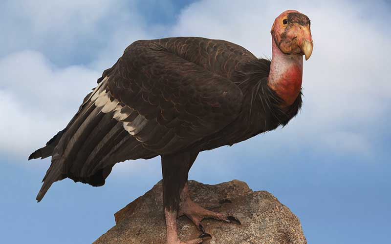
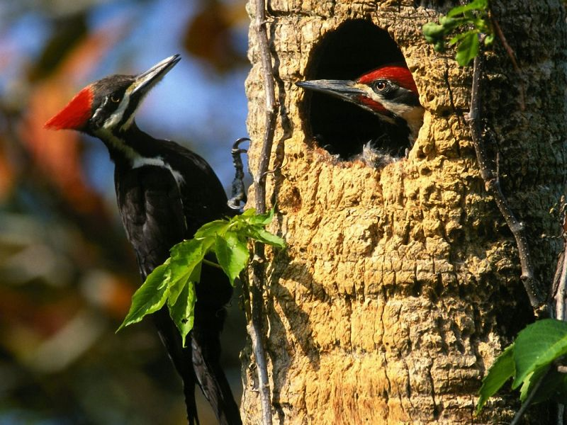

| Aguila Calva | Haliaeetus leucocephalus | cuenta hoy en día con 1,457 nidos. | habita en América del Norte. |
|  | El Cóndor Californiano | Gymnogyps californianus | los recuentos de población cifran el número de cóndores conocidos a 405, incluidas 226 aves que viven en la naturaleza y 179 en cautiverio. | Habita en el norte de Arizona y el sur de Utah (incluyendo la zona del gran Cañón y el parque nacional Zion). |
 | El guacamayo escarlata | Ara macao | Quedan unos 150 ejemplares | su distribución comprende desde las selvas de México hasta Brasil, Bolivia y el noreste de Argentina. Habita en las selvas tropicales de tierras bajas. |
|  | El pajaro carpintero | Picidae | 218 especies de cada una hay entre 100 y 50 ejemplares | Tienen una distribución cosmopolita, con la excepción de Australia, Madagascar y las regiones polares extremas. |